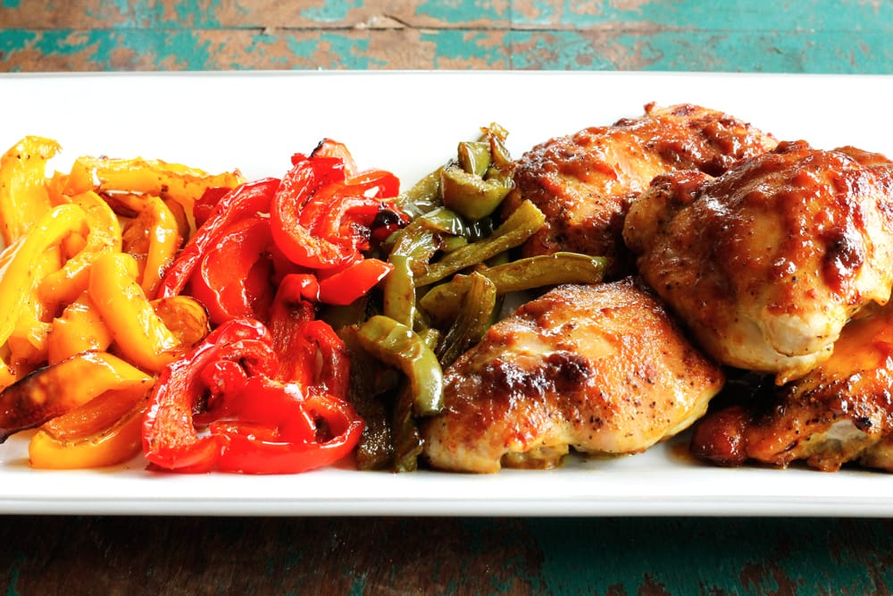

One Pan Oven-Baked Chicken and Peppers

Description
This One Pan Oven-Baked Chicken and Peppers recipe is an easy sheet pan dinner recipe for glazed chicken and tri-colored peppers.
Cook time: 45 min.
Ingredients
- 5 boneless, skinless chicken thighs or breasts
- 2 tablespoons butter
- 1/2 cup honey
- 1/4 cup mustard
- 1 teaspoon salt
- 1 teaspoon curry powder
- 2 tablespoons soy sauce
Steps
- Preheat oven to 375 degrees F. On a large baking dish, arrange chicken and peppers.
- In a separate bowl, combine all remaining ingredients. Pour the glaze over the chicken to coat.
- Bake for about 45 minutes, basting occasionally, until the chicken is done.
- Alternatively, you can marinate the chicken in the glaze in a plastic bag for at least an hour or overnight.
- Note: the peppers do get quite soft while cooking. If you like them a bit al dente, you can wait to add them until the last 20 minutes.
Enjoy!